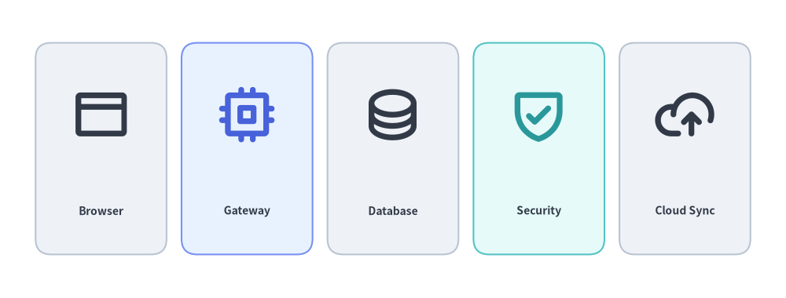
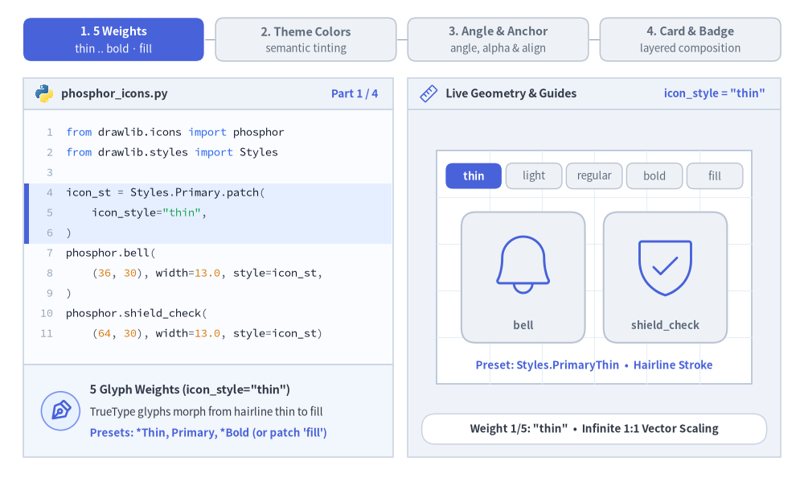
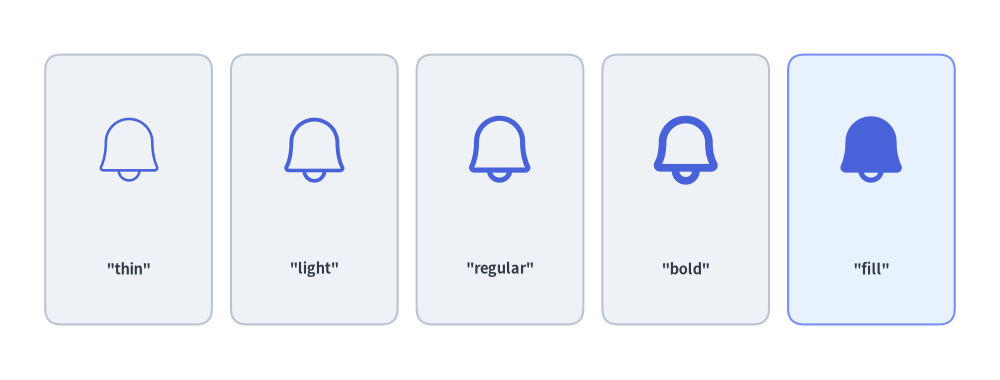
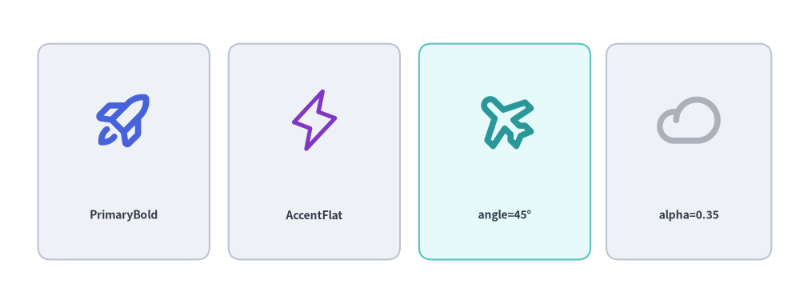
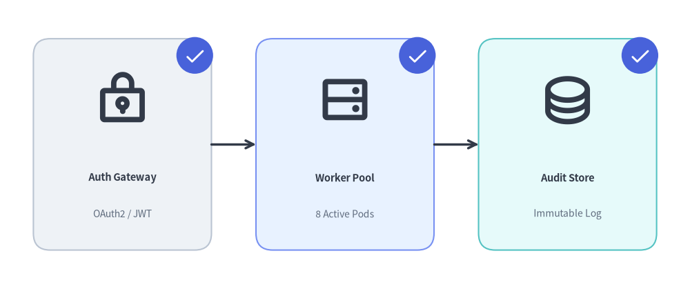

Phosphor ベクターアイコン
Drawlib は、drawlib.icons.phosphor を通じて Phosphor Icons（https://phosphoricons.com）のベクターグリフファミリー一式（5 種類のタイポグラフィウェイトに対応した 1,500 種類以上の鮮明なベクターアイコン）を標準搭載しているほか、任意のカスタム TrueType アイコンフォントを描画できる低レベル関数 font_icon() も提供します。

Source Code
from drawlib.canvas import save, setup
from drawlib.icons import phosphor
from drawlib.shapes import rectangle
from drawlib.styles import Styles
from drawlib.text import text
setup(width=126, height=48)
items = [
("Browser", phosphor.browser, Styles.Neutral, Styles.DarkBold),
("Gateway", phosphor.cpu, Styles.PrimaryNeutral, Styles.PrimaryBold),
("Database", phosphor.database, Styles.Neutral, Styles.DarkBold),
("Security", phosphor.shield_check, Styles.SecondaryNeutral, Styles.SecondaryBold),
("Cloud Sync", phosphor.cloud_arrow_up, Styles.Neutral, Styles.DarkBold),
]
for i, (label, icon_fn, card_st, icon_st) in enumerate(items):
cx = 16.2 + i * 23.4
rectangle((cx, 24), width=21, height=34, style=card_st.patch(shape_r=2.5))
icon_fn((cx, 29.5), width=9.5, style=icon_st)
text((cx, 14), label, style=Styles.DarkBold.patch(text_size=10.0))
save()
1. ベクターグリフの基本概念
静的なビットマップアイコンとは異なり、drawlib.icons.phosphor のすべての関数は組み込みの TrueType ベクターフォントから直接描画されます。1:1 のアスペクト比で無限に拡大縮小できると同時に、Style を通じて線のウェイト、テーマカラー、回転、不透明度、アンカー位置を動的に制御できます。5 種類のタイポグラフィウェイトにわたる icon_style の変化、ニュートラル面や強調面におけるセマンティックテーマプリセットの色付け、angle / alpha / halign / valign による xy 基準の配置変換、そして落ち着いたコンテナカードと角の確認バッジの組み合わせを以下のアニメーションで確認してください。

Source Code
from __future__ import annotations
import math
from drawlib.anim import Animation
from drawlib.canvas import save, setup
from drawlib.icons import code as code_icons
from drawlib.icons import phosphor
from drawlib.lines import line
from drawlib.shapes import arc, circle, rectangle
from drawlib.smartarts import SourceCode, SourceCodeStyles
from drawlib.styles import Styles
from drawlib.text import text
W, H = 138.0, 82.0
setup(width=W, height=H)
anim = Animation(fps=10.0, loop=0)
CODE_TEXT_SIZE = 10.0
PT_TO_CANVAS = W / 720.0
FONT_CANVAS = CODE_TEXT_SIZE * PT_TO_CANVAS
LINE_H = FONT_CANVAS * 1.8
PAD_Y = FONT_CANVAS * 1.2
CODE_STYLES = SourceCodeStyles.get("default", font_lang="en", text_size=CODE_TEXT_SIZE).patch(
box_style=Styles.Neutral.patch(shape_fill_color=(0, 0, 0, 0), shape_line_width=0),
)
PANE_HEADER = Styles.Neutral.patch(
shape_fill_color=(238, 243, 250),
shape_line_color=(203, 213, 225),
shape_line_width=1.2,
shape_r=0.0,
)
EDITOR_BODY = Styles.Neutral.patch(
shape_fill_color=(250, 252, 255),
shape_line_color=(203, 213, 225),
shape_line_width=1.2,
shape_r=0.0,
)
TAKEAWAY_BODY = Styles.Neutral.patch(
shape_fill_color=(242, 246, 253),
shape_line_color=(203, 213, 225),
shape_line_width=1.2,
shape_r=0.0,
)
STUDIO_BODY = Styles.Neutral.patch(
shape_fill_color=(239, 243, 249),
shape_line_color=(203, 213, 225),
shape_line_width=1.2,
shape_r=0.0,
)
PART_ITEMS = [
("1. 5 Weights", "thin .. bold · fill"),
("2. Theme Colors", "semantic tinting"),
("3. Angle & Anchor", "angle, alpha & align"),
("4. Card & Badge", "layered composition"),
]
def draw_step_bar(active_part: int) -> None:
"""Draw top 4-part progress bar (active_part is 1..4)."""
pill_w = 31.0
pill_h = 7.4
gap = 2.0
start_x = 4.0 + pill_w / 2.0
cy = 75.2
for idx, (label, sublabel) in enumerate(PART_ITEMS, start=1):
cx = start_x + (idx - 1) * (pill_w + gap)
if idx > 1:
prev_cx = cx - (pill_w + gap)
line(
(prev_cx + pill_w / 2.0 + 0.2, cy),
(cx - pill_w / 2.0 - 0.2, cy),
style=Styles.PrimaryBold if idx <= active_part else Styles.MutedThin,
)
if idx == active_part:
st = Styles.PrimaryFlat.patch(shape_r=1.4)
tst = Styles.WhiteBold.patch(text_size=10.3)
sub_tst = Styles.White.patch(text_size=9.5)
elif idx < active_part:
st = Styles.PrimaryNeutral.patch(shape_r=1.4, shape_line_width=1.1)
tst = Styles.PrimaryBold.patch(text_size=10.3)
sub_tst = Styles.Primary.patch(text_size=9.5)
else:
st = Styles.Neutral.patch(shape_r=1.4, shape_line_width=1.1)
tst = Styles.MutedBold.patch(text_size=10.3)
sub_tst = Styles.Muted.patch(text_size=9.5)
rectangle((cx, cy), width=pill_w, height=pill_h, style=st)
text((cx, cy + 1.35), label, style=tst)
text((cx, cy - 1.55), sublabel, style=sub_tst)
def draw_left_pane(
active_part: int,
code_lines: list[str],
hl_range: tuple[int, int],
icon_fn: object,
summary_title: str,
summary_line1: str,
summary_line2: str,
) -> None:
"""Draw left Python code editor + bottom vector glyph concept note."""
x0, w = 4.0, 63.5
cx = x0 + w / 2.0
top_y = 63.2
header_h = 5.4
editor_h = 43.8
takeaway_h = 15.8
rectangle((cx, top_y + header_h / 2.0), width=w, height=header_h, style=PANE_HEADER)
code_icons.python((x0 + 3.6, top_y + header_h / 2.0), width=3.4, style=Styles.Neutral)
text(
(x0 + 6.5, top_y + header_h / 2.0),
"phosphor_icons.py",
style=Styles.DarkBold.patch(text_size=10.2, halign="left"),
)
text(
(x0 + w - 2.6, top_y + header_h / 2.0),
f"Part {active_part} / 4",
style=Styles.PrimaryBold.patch(text_size=9.8, halign="right"),
)
rectangle((cx, top_y - editor_h / 2.0), width=w, height=editor_h, style=EDITOR_BODY)
hl_start, hl_end = hl_range
hl_top = top_y - PAD_Y - hl_start * LINE_H
hl_bot = top_y - PAD_Y - (hl_end + 1) * LINE_H
hl_cy = (hl_top + hl_bot) / 2.0
hl_h = hl_top - hl_bot
rectangle(
(cx, hl_cy),
width=w - 0.6,
height=hl_h,
style=Styles.Neutral.patch(shape_fill_color=(229, 239, 255), shape_line_width=0),
)
rectangle(
(x0 + 0.55, hl_cy),
width=0.9,
height=hl_h,
style=Styles.PrimaryFlat.patch(shape_line_width=0),
)
SourceCode.draw(
xy=(x0, top_y),
width=w,
code="\n".join(code_lines),
styles=CODE_STYLES,
code_lang="python",
show_linenum=True,
align="top_left",
)
take_cy = 3.6 + takeaway_h / 2.0
rectangle((cx, take_cy), width=w, height=takeaway_h, style=TAKEAWAY_BODY)
circle(
(x0 + 6.4, take_cy),
radius=3.3,
style=Styles.PrimaryNeutral.patch(shape_line_width=1.2),
)
icon_fn((x0 + 6.4, take_cy), width=3.8, style=Styles.PrimaryBold) # type: ignore[operator]
text(
(x0 + 11.4, take_cy + 3.6),
summary_title,
style=Styles.DarkBold.patch(text_size=10.4, halign="left"),
)
text(
(x0 + 11.4, take_cy - 0.2),
summary_line1,
style=Styles.Dark.patch(text_size=9.7, halign="left"),
)
text(
(x0 + 11.4, take_cy - 3.8),
summary_line2,
style=Styles.PrimaryBold.patch(text_size=9.6, halign="left"),
)
def draw_geometry_studio(param_badge: str, footer_caption: str) -> tuple[float, float]:
"""Draw right geometry lab shell, inner coordinate sheet with subtle grid, and footer."""
x0, w = 70.0, 64.0
cx = x0 + w / 2.0
top_y = 63.2
header_h = 5.4
body_h = 59.6
rectangle((cx, top_y + header_h / 2.0), width=w, height=header_h, style=PANE_HEADER)
phosphor.ruler((x0 + 3.6, top_y + header_h / 2.0), width=3.4, style=Styles.Primary)
text(
(x0 + 6.5, top_y + header_h / 2.0),
"Live Geometry & Guides",
style=Styles.DarkBold.patch(text_size=10.2, halign="left"),
)
text(
(x0 + w - 2.6, top_y + header_h / 2.0),
param_badge,
style=Styles.PrimaryBold.patch(text_size=9.6, halign="right"),
)
rectangle((cx, 3.6 + body_h / 2.0), width=w, height=body_h, style=STUDIO_BODY)
sheet_cx, sheet_cy = cx, 36.2
sheet_w, sheet_h = 54.0, 40.0
sx0, sy0 = sheet_cx - sheet_w / 2.0, sheet_cy - sheet_h / 2.0
rectangle(
(sheet_cx, sheet_cy),
width=sheet_w,
height=sheet_h,
style=Styles.Neutral.patch(
shape_fill_color=(255, 255, 255),
shape_line_color=(180, 194, 214),
shape_line_width=1.2,
),
)
g_st = Styles.MutedThin.patch(line_color=(232, 238, 246), line_width=0.8)
for gx in range(1, 6):
vx = sx0 + gx * (sheet_w / 6.0)
line((vx, sy0), (vx, sy0 + sheet_h), style=g_st)
for gy in range(1, 5):
vy = sy0 + gy * (sheet_h / 5.0)
line((sx0, vy), (sx0 + sheet_w, vy), style=g_st)
rectangle(
(cx, 8.4),
width=59.2,
height=5.2,
style=Styles.Neutral.patch(
shape_fill_color=(255, 255, 255),
shape_line_color=(203, 213, 225),
shape_line_width=1.1,
shape_r=2.4,
),
text=footer_caption,
text_style=Styles.DarkBold.patch(text_size=9.8),
)
return sheet_cx, sheet_cy
# =========================================================================
# Part 1: 5 Weights — style.icon_style ("thin" .. "bold" + "fill")
# =========================================================================
WEIGHT_STATES = [
("thin", 3.2, "Preset: Styles.PrimaryThin • Hairline Stroke"),
("light", 0.50, 'icon_style="light" • Delicate Schema Stroke'),
("regular", 3.2, "Preset: Styles.Primary • Standard Stroke"),
("bold", 0.50, "Preset: Styles.PrimaryBold • Heavy Stroke"),
("fill", 3.5, 'icon_style="fill" • Solid Filled Silhouette'),
]
ALL_WEIGHTS = ["thin", "light", "regular", "bold", "fill"]
for w_idx, (w_name, dur, preset_note) in enumerate(WEIGHT_STATES):
code_w = [
"from drawlib.icons import phosphor",
"from drawlib.styles import Styles",
"",
"icon_st = Styles.Primary.patch(",
f' icon_style="{w_name}",',
")",
"phosphor.bell(",
" (36, 30), width=13.0, style=icon_st,",
")",
"phosphor.shield_check(",
" (64, 30), width=13.0, style=icon_st)",
]
with anim.frame(duration=dur):
draw_step_bar(1)
draw_left_pane(
1,
code_w,
(3, 5),
phosphor.pen_nib,
f'5 Glyph Weights (icon_style="{w_name}")',
"TrueType glyphs morph from hairline thin to fill",
"Presets: *Thin, Primary, *Bold (or patch 'fill')",
)
scx, scy = draw_geometry_studio(
f'icon_style = "{w_name}"',
f'Weight {w_idx + 1}/5: "{w_name}" • Infinite 1:1 Vector Scaling',
)
# Top 5-pill weight tracker inside studio sheet
pw, ph, pgap = 9.6, 4.4, 0.75
p_start = scx - (5 * pw + 4 * pgap) / 2.0 + pw / 2.0
for pidx, pw_label in enumerate(ALL_WEIGHTS):
px = p_start + pidx * (pw + pgap)
if pidx == w_idx:
pst = Styles.PrimaryFlat.patch(shape_r=1.2)
ptst = Styles.WhiteBold.patch(text_size=9.5)
elif pidx < w_idx:
pst = Styles.PrimaryNeutral.patch(shape_r=1.2, shape_line_width=1.0)
ptst = Styles.PrimaryBold.patch(text_size=9.5)
else:
pst = Styles.Neutral.patch(shape_r=1.2, shape_line_width=1.0)
ptst = Styles.Muted.patch(text_size=9.5)
rectangle((px, 51.8), width=pw, height=ph, style=pst, text=pw_label, text_style=ptst)
# Dual preview cards showing stroke & solid fill progression
card_st = Styles.PrimaryNeutral if w_name == "fill" else Styles.Neutral
glyph_st = Styles.Primary.patch(icon_style=w_name)
for dx, fn, name_lbl in (
(-12.2, phosphor.bell, "bell"),
(12.2, phosphor.shield_check, "shield_check"),
):
rectangle((scx + dx, 34.4), width=21.2, height=22.4, style=card_st.patch(shape_r=2.5))
fn((scx + dx, 36.6), width=12.4, style=glyph_st)
text((scx + dx, 26.2), name_lbl, style=Styles.MutedBold.patch(text_size=9.5))
text((scx, 19.3), preset_note, style=Styles.PrimaryBold.patch(text_size=9.6))
# =========================================================================
# Part 2: Theme Colors — Semantic Vector Recoloring & Inverted Contrast
# =========================================================================
COLOR_STATES = [
(
"Neutral",
"PrimaryBold",
Styles.Neutral,
Styles.PrimaryBold,
Styles.PrimaryFlat,
3.2,
(6, 9),
"Semantic Vector Recoloring",
"style.icon_color tints glyphs from any Style",
"Pair colored glyphs with calm *Neutral surfaces",
"Styles.PrimaryBold • Brand Primary Vector Tint",
"Calm Neutral Surface + Brand Primary Glyph",
),
(
"SecondaryNeutral",
"SecondaryBold",
Styles.SecondaryNeutral,
Styles.SecondaryBold,
Styles.SecondaryFlat,
0.55,
(6, 9),
"Semantic Vector Recoloring",
"style.icon_color tints glyphs from any Style",
"Pair colored glyphs with calm *Neutral surfaces",
"Styles.SecondaryBold • Teal Secondary Tint",
"Calm SecondaryNeutral + Teal Secondary Glyph",
),
(
"Neutral",
"DangerFlat",
Styles.Neutral,
Styles.DangerFlat,
Styles.DangerFlat,
3.2,
(6, 9),
"Semantic Alert Coloring",
"DangerFlat & WarningBold highlight critical states",
"Monochrome glyphs recolor cleanly with zero blur",
"Styles.DangerFlat • Alert Crimson Vector Tint",
"Calm Neutral Surface + Alert Crimson Glyph",
),
(
"PrimaryFlat",
"WhiteBold",
Styles.PrimaryFlat,
Styles.WhiteBold,
Styles.PrimaryFlat,
3.5,
(4, 9),
"High-Contrast Inverted Badge",
"Mount Styles.WhiteBold atop Styles.PrimaryFlat",
"Crisp contrast for focal alerts & hero badges",
"Styles.WhiteBold on Saturated Styles.PrimaryFlat",
"Inverted Contrast: WhiteBold on PrimaryFlat Badge",
),
]
SWATCH_LABELS = ["Primary", "Secondary", "Danger", "White / Flat"]
for c_idx, (
badge_name,
icon_name,
badge_st,
icon_st,
pill_active_st,
dur,
hl_rng,
s_title,
s_l1,
s_l2,
foot_cap,
note_txt,
) in enumerate(COLOR_STATES):
code_c = [
"from drawlib.icons import phosphor",
"from drawlib.shapes import circle",
"from drawlib.styles import Styles",
"",
"circle((50, 30), radius=11.2,",
f" style=Styles.{badge_name})",
"phosphor.shield_check(",
" (50, 30), width=12.8,",
f" style=Styles.{icon_name},",
")",
]
with anim.frame(duration=dur):
draw_step_bar(2)
draw_left_pane(2, code_c, hl_rng, phosphor.palette, s_title, s_l1, s_l2)
scx, scy = draw_geometry_studio(f"Styles.{icon_name}", foot_cap)
# Top 4-pill semantic color tracker
cw, ch, cgap = 12.1, 4.4, 0.8
c_start = scx - (4 * cw + 3 * cgap) / 2.0 + cw / 2.0
for sidx, slbl in enumerate(SWATCH_LABELS):
sx = c_start + sidx * (cw + cgap)
if sidx == c_idx:
sst = pill_active_st.patch(shape_r=1.2)
stst = Styles.WhiteBold.patch(text_size=9.5)
else:
sst = Styles.Neutral.patch(shape_r=1.2, shape_line_width=1.0)
stst = Styles.MutedBold.patch(text_size=9.5)
rectangle((sx, 51.8), width=cw, height=ch, style=sst, text=slbl, text_style=stst)
circle((scx, 34.4), radius=11.2, style=badge_st)
phosphor.shield_check((scx, 34.4), width=12.8, style=icon_st)
text((scx, 19.3), note_txt, style=Styles.PrimaryBold.patch(text_size=9.6))
# =========================================================================
# Part 3: Angle & Anchor — angle, alpha, and halign / valign
# =========================================================================
for ang, dur in ((0, 0.50), (22, 0.50), (45, 3.4)):
code_rot = [
"from drawlib.icons import phosphor",
"from drawlib.styles import Styles",
"",
"ghost = Styles.DarkBold.patch(alpha=0.35)",
f"st = Styles.SecondaryBold.patch(angle={ang})",
"phosphor.airplane(",
" (50, 30), width=14, style=ghost,",
")",
"phosphor.airplane(",
" (50, 30), width=14, style=st,",
")",
]
with anim.frame(duration=dur):
draw_step_bar(3)
draw_left_pane(
3,
code_rot,
(3, 4),
phosphor.compass,
"CCW Rotation & Opacity (angle, alpha)",
"style.angle rotates CCW in degrees around xy",
"alpha=0.35 fades standby or inactive glyphs",
)
scx, scy = draw_geometry_studio(
f"angle = {ang}°",
f"angle={ang}° CCW Around xy • Standby Ghost alpha=0.35",
)
cy_a = 34.5
line((scx - 20.0, cy_a), (scx + 20.0, cy_a), style=Styles.MutedDashed.patch(line_width=1.0))
line((scx, cy_a - 14.5), (scx, cy_a + 18.0), style=Styles.MutedDashed.patch(line_width=1.0))
rectangle(
(scx, cy_a),
width=14.0,
height=14.0,
style=Styles.MutedDashed.patch(
shape_fill_color=(0, 0, 0, 0),
shape_line_color=(188, 200, 218),
shape_line_width=1.0,
),
)
# Standby ghost at 0 deg (alpha=0.35) + active rotated glyph
phosphor.airplane((scx, cy_a), width=14.0, style=Styles.DarkBold.patch(alpha=0.35))
phosphor.airplane((scx, cy_a), width=14.0, style=Styles.SecondaryBold.patch(angle=ang))
if ang > 0:
rad = math.radians(90.0 + ang)
line(
(scx, cy_a),
(scx + 17.5 * math.cos(rad), cy_a + 17.5 * math.sin(rad)),
style=Styles.PrimaryDashed.patch(line_width=1.3),
)
arc(
(scx, cy_a),
width=29.0,
height=29.0,
angle_start=90,
angle_end=90 + ang,
style=Styles.PrimaryNeutral.patch(shape_line_width=2.0),
)
text(
(scx - 10.5, cy_a + 14.8),
f"+{ang}° CCW",
style=Styles.PrimaryBold.patch(text_size=9.8, halign="right"),
)
line(
(scx + 6.8, cy_a - 2.2),
(scx + 10.6, cy_a - 2.2),
style=Styles.MutedBold.patch(line_width=1.1),
)
text(
(scx + 11.4, cy_a - 2.2),
"alpha=0.35\n(ghost)",
style=Styles.MutedBold.patch(text_size=9.5, halign="left"),
)
line(
(scx - 8.2, cy_a - 9.4),
(scx - 1.5, cy_a - 1.5),
style=Styles.DangerBold.patch(line_width=1.1),
)
circle((scx, cy_a), radius=1.25, style=Styles.DangerFlat)
text(
(scx - 8.8, cy_a - 9.8),
"xy (center)",
style=Styles.DangerBold.patch(text_size=9.6, halign="right"),
)
for ha, va, dur in (("center", "center", 0.55), ("left", "bottom", 3.5)):
code_align = [
"from drawlib.icons import phosphor",
"from drawlib.styles import Styles",
"",
"# Align 14x14 glyph box relative to xy",
"phosphor.paper_plane_tilt(",
" (44, 24), width=14.0,",
" style=Styles.PrimaryBold.patch(",
f' halign="{ha}", valign="{va}",',
" ),",
")",
]
with anim.frame(duration=dur):
draw_step_bar(3)
draw_left_pane(
3,
code_align,
(6, 8),
phosphor.crosshair,
"Anchor Alignment (halign & valign)",
"Default 'center' centers the width×width square",
"halign='left', valign='bottom' pins corner to xy",
)
badge_txt = "center / center" if ha == "center" else "left / bottom"
foot_txt = (
'Default halign="center", valign="center" at xy'
if ha == "center"
else 'halign="left", valign="bottom" • 14×14 Box at xy'
)
scx, scy = draw_geometry_studio(badge_txt, foot_txt)
ax, ay = scx - 4.0, scy - 4.2
line((ax - 15.0, ay), (ax + 22.0, ay), style=Styles.MutedDashed.patch(line_width=1.0))
line((ax, ay - 12.0), (ax, ay + 20.0), style=Styles.MutedDashed.patch(line_width=1.0))
if ha == "left":
# Ghost default center box for clear comparison
rectangle(
(ax, ay),
width=14.0,
height=14.0,
style=Styles.MutedDashed.patch(
shape_fill_color=(0, 0, 0, 0),
shape_line_color=(195, 206, 222),
shape_line_width=1.0,
),
)
text(
(ax - 7.8, ay - 9.2),
"default center",
style=Styles.MutedBold.patch(text_size=9.5),
)
box_cx, box_cy = ax + 7.0, ay + 7.0
else:
box_cx, box_cy = ax, ay
rectangle(
(box_cx, box_cy),
width=14.0,
height=14.0,
style=Styles.PrimaryDashed.patch(shape_fill_color=(0, 0, 0, 0), shape_line_width=1.4),
)
phosphor.paper_plane_tilt(
(ax, ay),
width=14.0,
style=Styles.PrimaryBold.patch(halign=ha, valign=va),
)
line(
(box_cx - 7.0, box_cy + 9.2),
(box_cx + 7.0, box_cy + 9.2),
arrow_head="<->",
style=Styles.PrimaryBold.patch(line_width=1.3),
)
text((box_cx, box_cy + 12.0), "width = 14", style=Styles.PrimaryBold.patch(text_size=9.6))
circle((ax, ay), radius=1.3, style=Styles.DangerFlat)
if ha == "center":
line(
(ax - 8.2, ay - 9.4),
(ax - 1.6, ay - 1.6),
style=Styles.DangerBold.patch(line_width=1.1),
)
text(
(ax - 8.8, ay - 9.8),
"xy (center)",
style=Styles.DangerBold.patch(text_size=9.6, halign="right"),
)
else:
text(
(ax + 2.2, ay - 3.2),
"xy anchor",
style=Styles.DangerBold.patch(text_size=9.6, halign="left"),
)
# =========================================================================
# Part 4: Card & Badge — 3-Layer Service Card Composition
# =========================================================================
CARD_STEPS = [
(
1,
0.55,
(0, 1),
"Layer 1 / 3",
"Step 1: Calm PrimaryNeutral Container Card",
"1. Calm Neutral Container Card",
"Ground service nodes in calm *Neutral cards",
"Keeps 50%+ neutral balance across diagrams",
),
(
2,
3.3,
(2, 5),
"Layer 2 / 3",
"Step 2: Centered DarkBold Glyph + Node Labels",
"2. Centered Primary Glyph & Labels",
"Place phosphor.lock_key (DarkBold) above labels",
"High contrast readability on light card fills",
),
(
3,
0.50,
(6, 7),
"Layer 3 / 3",
"Step 3: Saturated PrimaryFlat Corner Badge",
"3. Circular Corner Verification Badge",
"Anchor a small PrimaryFlat circle on card corner",
"Reserves saturated color strictly for status focal",
),
(
4,
3.6,
(6, 10),
"3-Layer Card",
"Complete 3-Layer Card: Card + Glyph + Check Badge",
"3. Complete Service Card + Check Badge",
"Overlay WhiteBold phosphor.check inside badge",
"Reusable idiom for gateways, pools & audit nodes",
),
]
code_card = [
"rectangle((44, 34), width=28, height=32,",
" style=Styles.PrimaryNeutral)",
"phosphor.lock_key(",
" (44, 42), 10, style=Styles.DarkBold)",
'text((44, 30), "Auth Gateway",',
" style=Styles.DarkBold)",
"circle((56, 49), radius=3.4,",
" style=Styles.PrimaryFlat)",
"phosphor.check(",
" (56, 49), width=3.9,",
" style=Styles.WhiteBold)",
]
for step_num, dur, hl_rng, badge_lbl, foot_lbl, s_title, s_l1, s_l2 in CARD_STEPS:
with anim.frame(duration=dur):
draw_step_bar(4)
draw_left_pane(4, code_card, hl_rng, phosphor.stack, s_title, s_l1, s_l2)
scx, scy = draw_geometry_studio(badge_lbl, foot_lbl)
card_cx, card_cy = 91.5, 35.2
bx, by = card_cx + 12.0, card_cy + 13.6
# Layer 1: Calm PrimaryNeutral container card
rectangle(
(card_cx, card_cy),
width=28.0,
height=32.0,
style=Styles.PrimaryNeutral.patch(shape_r=3.0),
)
# Layer 2: Centered DarkBold glyph + labels
if step_num >= 2:
phosphor.lock_key((card_cx, card_cy + 6.8), width=10.0, style=Styles.DarkBold)
text(
(card_cx, card_cy - 5.4),
"Auth Gateway",
style=Styles.DarkBold.patch(text_size=10.2),
)
text(
(card_cx, card_cy - 10.8),
"OAuth2 / JWT",
style=Styles.Muted.patch(text_size=9.6),
)
# Layer 3a: Saturated PrimaryFlat corner circle
if step_num >= 3:
circle((bx, by), radius=3.4, style=Styles.PrimaryFlat)
# Layer 3b: WhiteBold check glyph + layer callouts
if step_num >= 4:
phosphor.check((bx, by), width=3.9, style=Styles.WhiteBold)
line((bx + 3.8, by), (109.5, by), style=Styles.PrimaryBold.patch(line_width=1.2))
text(
(110.3, by),
"3. Check Badge",
style=Styles.PrimaryBold.patch(text_size=9.5, halign="left"),
)
line(
(card_cx + 6.2, card_cy + 6.8),
(109.5, card_cy + 6.8),
style=Styles.DarkBold.patch(line_width=1.2),
)
text(
(110.3, card_cy + 6.8),
"2. DarkBold Icon",
style=Styles.DarkBold.patch(text_size=9.5, halign="left"),
)
line(
(card_cx + 14.3, card_cy - 12.5),
(109.5, card_cy - 12.5),
style=Styles.Primary.patch(line_width=1.2),
)
text(
(110.3, card_cy - 12.5),
"1. Neutral Card",
style=Styles.Primary.patch(text_size=9.5, halign="left"),
)
save()
- 5 種類のタイポグラフィウェイト（
style.icon_style）:style.patch(icon_style=...)またはプリセットバリアント（*Thin、基本のStyles.Primary、*Bold）により、あらゆる Phosphor グリフを"thin"、"light"、"regular"、"bold"、および塗りつぶしの"fill"の間で切り替えられます。 - セマンティックなベクター色変更（
style.icon_color）: テーマプリセット（Styles.PrimaryBold、Styles.SecondaryBold、Styles.DangerFlat）で単色ベクターグリフを着色し、高彩度な*Flatバッジの上にStyles.WhiteBoldを重ねることで鮮明なコントラストを実現します。 - 回転・不透明度・アンカー位置揃え（
angle、alpha、halign、valign）:xyを中心に反時計回りの度数法で回転させたり、alphaでスタンバイ状態のグリフを薄く表示したり、xyに対するwidth × widthのグリフ枠の基準位置を変更（またはxy_shiftでオフセット）したりできます。 - カードとバッジのレイヤー構成: 落ち着いたニュートラルコンテナカード（
Styles.PrimaryNeutral）の中央にメインアイコン（Styles.DarkBold）を配置し、カードの角に円形の確認バッジ（Styles.PrimaryFlat+Styles.WhiteBold）を重ねられます。
2. 関数シグネチャとスタイルパラメータ
すべての Phosphor アイコンは、snake_case のアイコン名を関数名として公開されています。
from drawlib.icons import phosphor
phosphor.<icon_name>(
xy: tuple[float, float],
width: float,
*,
style: Style,
) -> None
| パラメータ / スタイルフィールド | 型 | デフォルト | 説明 |
|---|---|---|---|
xy |
tuple[float, float] |
必須 | アイコンのアンカー座標 (x, y)（デフォルトは中心揃え）。 |
width |
float |
必須 | キャンバス単位でのアイコン幅（高さは 1:1 のアスペクト比で比例スケーリングされます）。 |
style |
Style |
必須 | ウェイト、色、位置揃え、オフセット、回転、不透明度を制御するプリセットまたはパッチ適用済みの Style。 |
style.icon_style |
"thin" | "light" | "regular" | "bold" | "fill" |
"thin" |
Phosphor グリフのタイポグラフィウェイト（線の太さ・塗り）。 |
style.icon_color |
tuple[int, int, int] | Color |
テーマカラー | グリフの色（Styles.PrimaryBold、Styles.DarkBold、Styles.WhiteBold などのプリセットスタイルで自動マッピングされます）。 |
style.halign |
"left" | "center" | "right" |
"center" |
xy[0] に対する水平方向のアンカー位置揃え。 |
style.valign |
"bottom" | "center" | "top" |
"center" |
xy[1] に対する垂直方向のアンカー位置揃え。 |
style.xy_shift |
tuple[float, float] | None |
None |
angle と連動して回転する相対 (dx, dy) 座標オフセット。 |
style.xy_abs_shift |
tuple[float, float] | None |
None |
angle に依存しない絶対 (dx, dy) 座標オフセット。 |
style.angle |
float |
0.0 |
xy を中心とする反時計回りの回転角度（度数法）。 |
style.alpha |
float |
1.0 |
0.0（完全透明）から 1.0（完全不透明）までの不透明度。 |
3. タイポグラフィウェイト（thin、light、regular、bold、fill）
Phosphor ベクターアイコンは、style.patch(icon_style=...) またはプリセットスタイルのサフィックス（*Light -> "light"、*Bold -> "bold"、*Flat -> "fill"）で制御できる 5 種類のタイポグラフィウェイトをサポートしています。
"thin": 控えめな背景透かし（ウォーターマーク）に適した極細のストローク。"light": 情報密度の高い技術スキーマに適した繊細な線幅。"regular": 一般的なダイアグラムノードに適したバランスの良い標準ストローク。"bold": 主要なゲートウェイやサービスに適した力強い太線ストローク。"fill": アクティブ状態、バッジ、アラートに適した塗りつぶしシルエット。
from drawlib.canvas import save, setup
from drawlib.icons import phosphor
from drawlib.shapes import rectangle
from drawlib.styles import Styles
from drawlib.text import text
setup(width=126, height=48)
weights = ["thin", "light", "regular", "bold", "fill"]
for i, w_name in enumerate(weights):
cx = 16.2 + i * 23.4
card_st = Styles.PrimaryNeutral if w_name == "fill" else Styles.Neutral
rectangle((cx, 24), width=21, height=34, style=card_st.patch(shape_r=2))
phosphor.bell((cx, 29), width=10, style=Styles.Primary.patch(icon_style=w_name))
text((cx, 14), f'"{w_name}"', style=Styles.DarkBold.patch(text_size=10.5))
save()

4. セマンティックカラー・回転・不透明度
Phosphor アイコンはベクターグリフとして描画されるため、任意のプリセットテーマスタイル（Styles.PrimaryBold、Styles.SecondaryBold、Styles.DarkBold、Styles.WhiteBold）で着色したり、angle で回転させたり、alpha で半透明にしたりできます。
from drawlib.canvas import save, setup
from drawlib.icons import phosphor
from drawlib.shapes import rectangle
from drawlib.styles import Styles
from drawlib.text import text
setup(width=126, height=48)
# 1. Semantic PrimaryBold
rectangle((19.5, 24), width=27, height=34, style=Styles.Neutral.patch(shape_r=2))
phosphor.rocket_launch((19.5, 29), width=10, style=Styles.PrimaryBold)
text((19.5, 14), "PrimaryBold", style=Styles.DarkBold.patch(text_size=10.0))
# 2. Filled Accent Silhouette
rectangle((49.5, 24), width=27, height=34, style=Styles.Neutral.patch(shape_r=2))
phosphor.lightning((49.5, 29), width=10, style=Styles.AccentFlat)
text((49.5, 14), "AccentFlat", style=Styles.DarkBold.patch(text_size=10.0))
# 3. Rotated Icon (angle=45)
rectangle((79.5, 24), width=27, height=34, style=Styles.SecondaryNeutral.patch(shape_r=2))
phosphor.airplane((79.5, 29), width=10, style=Styles.SecondaryBold.patch(angle=45))
text((79.5, 14), "angle=45°", style=Styles.DarkBold.patch(text_size=10.0))
# 4. Semi-Transparent Icon (alpha=0.35)
rectangle((108.5, 24), width=26, height=34, style=Styles.Neutral.patch(shape_r=2))
phosphor.cloud((108.5, 29), width=10, style=Styles.DarkBold.patch(alpha=0.35))
text((108.5, 14), "alpha=0.35", style=Styles.DarkBold.patch(text_size=10.0))
save()

5. Phosphor アイコンと図形・バッジの組み合わせ
アーキテクチャ図やパイプライン図では、Phosphor アイコンをニュートラルなコンテナカード（rectangle）および角の円形バッジ（circle）と組み合わせて構成します。
from drawlib.canvas import save, setup
from drawlib.icons import phosphor
from drawlib.lines import line
from drawlib.shapes import circle, rectangle
from drawlib.styles import Styles
from drawlib.text import text
setup(width=124, height=52)
stages = [
(22, "Auth Gateway", "OAuth2 / JWT", phosphor.lock_key, Styles.Neutral),
(62, "Worker Pool", "8 Active Pods", phosphor.hard_drives, Styles.PrimaryNeutral),
(102, "Audit Store", "Immutable Log", phosphor.database, Styles.SecondaryNeutral),
]
for cx, title, subtitle, icon_fn, card_st in stages:
# 1. Container card
rectangle((cx, 26), width=32, height=38, style=card_st.patch(shape_r=3))
# 2. Main Phosphor icon
icon_fn((cx, 34), width=10, style=Styles.DarkBold)
# 3. Title & subtitle labels
text((cx, 20), title, style=Styles.DarkBold.patch(text_size=10.5))
text((cx, 13.5), subtitle, style=Styles.Muted.patch(text_size=10.0))
# 4. Corner check badge
bx, by = cx + 13, 42
circle((bx, by), radius=3.3, style=Styles.PrimaryFlat)
phosphor.check((bx, by), width=3.8, style=Styles.WhiteBold)
line((38, 26), (46, 26), arrow_head="->", style=Styles.DarkBold)
line((78, 26), (86, 26), arrow_head="->", style=Styles.DarkBold)
save()

6. カスタムアイコンフォント用の低レベル font_icon()
カスタムフォントやサードパーティ製 .ttf アイコンフォント（FontAwesome や社内アイコンフォントなど）のグリフを描画するには、drawlib.icons の font_icon() を使用します。
from drawlib.icons import font_icon
from drawlib.styles import Styles
font_icon(
xy=(50, 25),
width=12,
code="\uf09b", # Unicode glyph code point
file="assets/fonts/fa-brands-400.ttf", # Path to .ttf font file
style=Styles.DarkBold,
)
7. カテゴリ別の頻出 Phosphor アイコン一覧
| カテゴリ | 代表的な phosphor.<name> 関数 |
|---|---|
| コンピューティング・システム | cpu, hard_drive, hard_drives, desktop, laptop, device_mobile, terminal_window, code, browser, globe |
| クラウド・ストレージ | cloud, cloud_arrow_up, cloud_arrow_down, cloud_check, database, folder, file_text, file_code, archive |
| ネットワーク・Git | broadcast, wifi_high, arrows_left_right, git_branch, git_commit, git_merge, git_pull_request, share_network |
| セキュリティ・ユーザー | lock, lock_key, shield, shield_check, shield_warning, key, fingerprint, user, users, user_circle |
| ステータス・分析 | check, check_circle, warning, warning_circle, info, gear, bell, magnifying_glass, chart_bar, chart_line_up |
[!TIP] Google Cloud (GCP) アイコン、Amazon Web Services (AWS) アイコン、Microsoft Azure アイコン、クラウド・オリジナルクラウドアイコン、AI・機械学習アイコン、データ・データベースアイコン、**コード・言語・フレームワークアイコンなど、全 34 アイコンモジュール（合計 4,538 アイコン）の全体像については、アイコン概要**を参照してください。